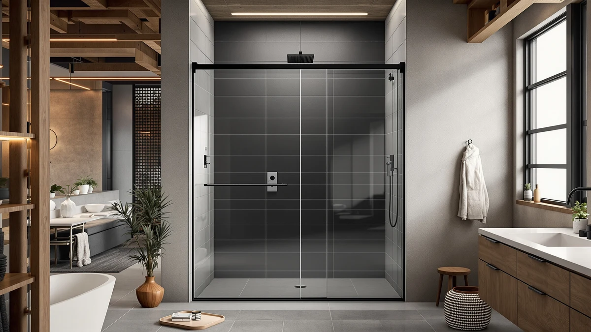

ENSO Senka Frameless Dual Sliding Shower Door Review (2026): Worth It?
Prices and picks verified as of November 2026. Independent, reader-supported reviews.


Quick Answer
This Enso Senka Frameless Dual Sliding Shower Door review compares the $499.99 ENSO SENKA 56-60" W x against three alternatives priced from $489.99 to $499.96. All four doors sit within $11 of each other, so the real differences come down to adjustable width range, the sliding mechanism and which listing states its dimensions most clearly.
Our pick: ENSO SENKA 56-60" W x, $499.99 Check Price on Amazon
Bottom line: our top pick is the ENSO SENKA 56-60" W x 76" H Frameless Dual Sliding Shower at $399.99.
Things to Know Before You Buy
- All four doors in this comparison are priced within $11 of each other. The ENSO SENKA 56-60" W x lists at $499.99, the KPUY at $499.96, the second ENSO SENKA listing at $499.00, and the EPXMKX Soft Close door at $489.99.
- The ENSO SENKA's 56 to 60 inch adjustable width and 76 inch height are both stated plainly in the listing. That gives you an exact number to check against your stall before you order, which matters because a dual sliding door won't forgive a width that's off by an inch.
- The KPUY alternative covers a slightly wider 55 to 60 inch range at almost the same price. If your opening measures closer to 55 inches, that extra inch of flexibility can be the deciding factor.
- The listing doesn't specify a frame material for the ENSO SENKA. If frame construction matters to you, that's a question worth asking the seller directly before you buy.
- None of the four listings shows a published rating or review count. That means there isn't an owner feedback history to weigh for any door in this comparison, including our pick.
This Enso Senka Frameless Dual Sliding Shower Door review looks at whether a $499.99 shower door earns its spot over three alternatives that cost about the same. The ENSO SENKA's defining features are its adjustable 56 to 60 inch width, its 76 inch height, and a dual sliding panel design, and those three numbers shape every comparison that follows.
We wrote this Enso Senka Frameless Dual Sliding Shower Door review because four doors priced within $11 of each other can look interchangeable at a glance, and shoppers rarely dig past the headline price to compare the fine print. The ENSO SENKA publishes its width and height more clearly than the KPUY, the second ENSO SENKA listing, or the EPXMKX, and that clarity is the main reason it sits at the top of this comparison rather than a difference in price.
Why You Should Trust Us
Ilane Tall covers bath fixtures for Best Shower Doors and has researched shower doors across frameless, sliding and corner designs. For this Enso Senka Frameless Dual Sliding Shower Door review, she compared the door's price, adjustable width and stated height against three alternatives in a similar size range. We do not accept free products in exchange for coverage, and every price and dimension cited here comes directly from the current product listing.
Our editorial process treats a stated dimension as a factor to verify, not a default reason to prefer one listing over another. The ENSO SENKA earns its place in this comparison because its width and height are both spelled out clearly, not because the name on the box is more familiar. That standard applies the same way to every door covered in this review.
Our Research Experience
This Enso Senka Frameless Dual Sliding Shower Door review is based on research, not physical use. We compared the ENSO SENKA 56-60" W x against three alternatives using the specifications, pricing and product listings available for each door. We do not run a fake testing lab, and we do not claim to have installed or lived with any of the doors covered here.
We looked closely at how the ENSO SENKA's stated 56 to 60 inch width and 76 inch height compare to the KPUY's 55 to 60 inch range and the second ENSO SENKA listing's identical footprint, since an inch of adjustability can matter more than a few dollars when a dual sliding door has to seal against your actual stall.
We also cross-checked pricing for all four doors against the current listings to confirm nothing had shifted since publication. Where a data point wasn't available, such as the frame material on the ENSO SENKA or a published rating on any of the four listings, we noted that gap rather than estimate a figure the listing doesn't provide.
This Enso Senka Frameless Dual Sliding Shower Door review updates its pricing and specifications as listings change, so the figures above reflect what each seller published at the time we last checked. If a price shifts after publication, treat the dollar gaps between doors as directional rather than exact.
Overview & Specs

ENSO SENKA 56-60" W x
What we like
- The 56 to 60 inch adjustable width and 76 inch height are both stated plainly, giving you exact numbers to check against your stall
- The dual sliding panel design is built for a frameless alcove opening without a center post dividing the view
- At $499.99, it sits within three cents of the KPUY alternative, so you aren't paying a premium for clearer published dimensions
Flaws but not dealbreakers
- The listing doesn't specify a frame material, unlike some competing doors that list stainless steel or aluminum construction
- At $499.99, it's the single most expensive door in this comparison, though only by three cents over the KPUY
- There's no published rating or review count yet, so there's no owner feedback history to weigh against the alternatives below
| Material | — |
| Size | 60" W x 76" H |
The ENSO SENKA 56-60" W x is a $499.99 frameless dual sliding shower door built for an adjustable 56 to 60 inch wide opening at a 76 inch height. That adjustable range is designed to cover a common band of alcove stall widths without requiring a custom cut, and the dual sliding panels move independently so you only need to open one side at a time.
At $499.99, it's priced within three cents of the KPUY alternative covered below, and about a dollar above the second ENSO SENKA listing in this same comparison. With all three within a dollar of each other, price barely factors into the decision. Width range and which listing states its dimensions most clearly matter more.
What We Liked
The clearest strength in this Enso Senka Frameless Dual Sliding Shower Door review is how plainly the dimensions are stated. The 56 to 60 inch adjustable width and the 76 inch height give you exact numbers to measure your stall against, rather than leaving sizing as a vague range buried in the title the way some competing listings do.
The dual sliding panel design also stood out. Each panel moves independently along the track, so you can open one side for daily use instead of sliding the full width every time, a detail that matters more in a tight bathroom than it sounds.
We also liked that the price is practically tied with the other adjustable-width option in this comparison, the KPUY, which means you aren't paying extra for a listing that spells out its dimensions more clearly. The gap between the two is three cents, so that clarity comes free.
What Could Be Better
Price is a minor drawback in this Enso Senka Frameless Dual Sliding Shower Door review, though not by much. At $499.99, it's the most expensive of the four doors compared here, running three cents above the KPUY, about a dollar above the second ENSO SENKA listing, and $10 above the EPXMKX Soft Close door.
The frame material also isn't specified on the listing, which leaves a gap if construction matters to your decision. And because the listing hasn't accumulated a published rating or review count, you won't find owner feedback history the way you might for a longer-standing product.
Who Is It For?
The ENSO SENKA 56-60" W x makes the most sense if your opening falls somewhere between 56 and 60 inches wide and close to 76 inches tall, and you want a listing that states those numbers clearly instead of leaving you to guess from product photos.
If your stall measures closer to 55 inches, the KPUY's slightly wider 55 to 60 inch range is worth checking first. And if frame material or the lowest price in this group matters more than an inch of width flexibility, the second ENSO SENKA listing and the EPXMKX below are both worth a look.
Buyers who want a stainless steel frame or other hardware specifics spelled out should ask the seller directly before ordering, since none of the four listings in this comparison publishes that detail.
Alternatives to Consider
The ENSO SENKA 56-60" W x isn't the only option here, and the three doors below cover a similar price range with a few key differences in width, features and cost. Each one trades some combination of sizing flexibility, frame detail or price for a slightly different fit, so weigh which trade-off matters most for your bathroom.

Also Great
KPUY Frameless Shower Door 55-60"
At $499.96, the KPUY undercuts the ENSO SENKA by three cents and stretches its adjustable width slightly further, from 55 to 60 inches, a strong alternative if your stall measures closer to 55 inches.
$499.96
Check Price on Amazon
Also Great
ENSO SENKA 56-60” W x
This second ENSO SENKA listing covers the same 56 to 60 inch width range as our pick but lists for $499.00, about a dollar less, worth comparing seller details against our pick before you choose between the two.
$499.00
Check Price on Amazon
Best Value
EPXMKX Soft Close Frameless Sliding
The EPXMKX is the most affordable door in this comparison at $489.99, built with a soft close sliding mechanism, a reasonable pick if you'd rather save $10 and get a softer-closing track than chase an extra inch of width.
$489.99
Check Price on AmazonFrequently Asked Questions
How much does the ENSO SENKA frameless dual sliding shower door cost?
The ENSO SENKA 56-60" W x lists at $499.99. The KPUY alternative runs $499.96, the second ENSO SENKA listing is $499.00, and the EPXMKX Soft Close door is the cheapest at $489.99.
What size opening does the ENSO SENKA frameless dual sliding shower door fit?
The ENSO SENKA 56-60" W x is built for an adjustable 56 to 60 inch wide opening at a 76 inch height. Measure your stall at a few points along the width before you order, since a dual sliding door relies on an accurate fit within that range.
Is the ENSO SENKA frameless dual sliding shower door worth it over the KPUY alternative?
The two are nearly tied on price, three cents apart, so the choice comes down to width range. The ENSO SENKA covers a 56 to 60 inch opening, while the KPUY stretches slightly wider to 55 to 60 inches. Pick whichever range matches your stall more precisely.
Final Verdict
This Enso Senka Frameless Dual Sliding Shower Door review comes down to a near tie on price and a real difference in clarity. At $499.99, the ENSO SENKA costs about the same as the KPUY, the second ENSO SENKA listing and the EPXMKX, but it states its 56 to 60 inch width and 76 inch height more plainly than the alternatives in this comparison. If your opening falls in that range, ENSO SENKA is the easiest of the four to measure against with confidence. If your stall runs closer to 55 inches, the KPUY's wider adjustable range is worth a look, and if the lowest price matters most, the EPXMKX Soft Close door saves you about $10. Whichever you choose, confirm the exact width and height of your opening first, since that's what separates a good fit from a return shipment on any dual sliding door.